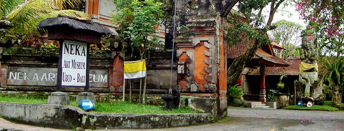

Museum Neka Ubud Bali
Aktivitas wisata Ubud Bali, sangat terkenal sampai ke mancanegara dan banyak hal menarik yang wisatawan, dapat lakukan di tempat wisata Ubud. Salah satu tempat menarik di Ubud Bali, yang banyak mendapat kunjungan dari wisatawan adalah Museum Neka Ubud Bali. Jika anda pernah mendengar pelukis terkenal Indonesia, yang bernama Affandi dan Bagong Kussudiardjo. Maka Museum Neka Ubud, salah satu tempat tempat wisata di Ubud Bali yang harus di kunjungi.
Neka Art Museum Di Ubud
Museum Neka Ubud Bali, lokasinya berada di Jalan Raya Campuhan, Kedewatan, Ubud
Museum Neka Ubud Bali, dibuka pada tahun 1982. Nama Museum berasal dari nama seorang guru, yang memiliki kegemaran dalam mengkoleksi lukisan, nama guru tersebut adalah Suteja Neka.
Bangunan museum Neka Ubud Bali, memiliki arsitektur khas Bali dengan standar museum International. Selain bangunan museum Neka sangat terawat, cara menampilkan hasil seni lukis di museum Neka sangat terorganisir. Ini memudahkan pengunjung, untuk mengerti dan menikmati seni lukis. Setiap tahun, lukisan di museum Neka bertambah banyak dan saat ini ada lebih dari 300 lukisan, dari seniman mancanegara ataupun pelukis Indonesia.
Jam Buka Museum Dan Biaya Tiket Masuk
Tiket masuk akan dikenakan sebesar Rp 50.000, untuk orang dewasa dan anak-anak di bawah 12 tahun gratis. Untuk jam buka dapat dilihat di bawah ini.
Tempat Lukisan Pelukis Affandi
Museum Neka salah satu tempat di Bali untuk dapat melihat lukisan karya Affandi. Terdapat dua lukisan karya Affandi di museum Neka Ubud, yaitu:
- Lukisan Tari Barong & Rangda, tahun 1973. Dengan ukuran lukisan 100 x 185 cm.
- Lukisan Perahu Nelayan, tahun 1975. Dengan ukuran lukisan 103 x 129 cm.
Selain Affandi, museum Neka Ubud juga memamerkan lukisan dari pelukis Bagong Kussudiardjo, dengan judul lukisan Penari, dibuat pada tahun 1990, dengan ukuran lukisan 143 x 295 cm.
Cara Terbaik Mengunjungi Museum Neka Ubud Bali
Saat anda wisata di Ubud Bali, tentunya anda akan memerlukan sarana transfortasi untuk mengunjungi tempat wisata di Bali yang anda inginkan. Jika anda menginap di Ubud dan hanya ingin wisata ke satu tempat wisata di Ubud. Menggunakan taksi adalah cara terbaik. Banyak taksi yang tersedia di Ubud, jadi anda tidak akan kesusahan untuk mencari.
Jika wisatawan tidak menginap di Ubud, cara terbaik untuk mengunjungi Museum Neka dan tempat wisata lain di Ubud adalah dengan menggunakan jasa sewa mobil dan driver di Bali. Di Ubud, untuk mencari tempat parkir, tidaklah mudah. Terkadang harus parkir di pinggir jalan dan sangat susah untuk mendapatkan tempat parkir. Karena itu, disarankan untuk menggunakan jasa rental mobil dan supir di Ubud Bali. Selain Museum Neka, Ubud juga memiliki museum lain yang layak untuk anda kunjungi. Nama museumnya adalah Arma museum Ubud.